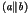
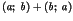
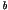
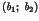

Ideas on refining the atomicity of actions go back to Lipton [147]. Such atomicity refinement has also been studied in TLA by Lamport and Schneider [140] and Cohen and Lamport [52].
Within the action systems formalism [13,12] there has also been considerable work on this subject. Ralph Back's initial work is described in [10] and [11]. This has been extended by Sere and Walden [176] (for action systems with procedures) and Büchi and Sekerinski [42] (for concurrent object oriented action systems).
Non-atomic refinement has been studied extensively in the context of process algebras, usually under the term action refinement [4,203,98]. De Bakker and de Vink in [57] provide a survey. There has also been work in a Petri net setting [38]. The issue in a process algebra is the use of an interleaving model of concurrency, which is incompatible with action refinement. In particular, if  is expanded as  then an action refinement of  into  breaks the requirement that semantic equivalences should be congruences with respect to refinement.
However, in Z (and Object-Z) there are no such constraints because there are no global behavioural constructors such as in a process algebra. In fact, although there is a primitive in Object-Z as we shall see later, this is a schema calculus operator which builds a single new operation rather than defining a temporal constraint over existing behaviours.
The issue of non-atomic refinement in a state-based language was raised in [210], and the results in this chapter were first formulated in [64].